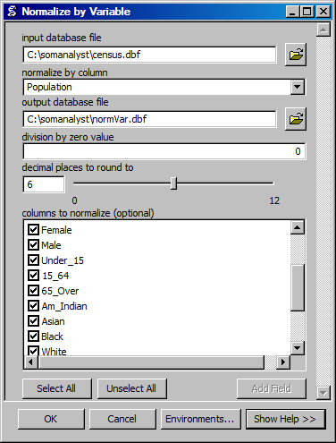

Normalize by Variable
Creates a database file with values normalized by a column.
ArcGIS Reference

Parameters
- input database file
- The database file to be normalized.
- normalize by column
- The columns that contain the values by which to normalize other data.
- output database file
- The ouput database file that will contain the normalized values.
- division by zero value
- The value to assign when the resulting normalization requires a division by zero, as is the case when the column contains zeros.
- decimal places to round to
- The number of decimal places to round the normaized values to.
- columns to normalize
- The columns to normalize. If no columns are selected normalization will be performed on all columns that are numeric.
Code Reference
-
uiNormVar.normalize(inName, outName, fieldNames, normBy, zeroDivision, decimalPlaces)
Creates a DBF with values normalized by a column from within an existing DBF.
| Arguments : |
- inName
The input DBF filename.
- outName
The ouput DBF filename.
- normBy
The column for normalizing values.
- zeroDivision
The value to assign if their is a division by zero.
- decimalPlace
The number of decimal places to which numbers should be rounded.
|
|---|